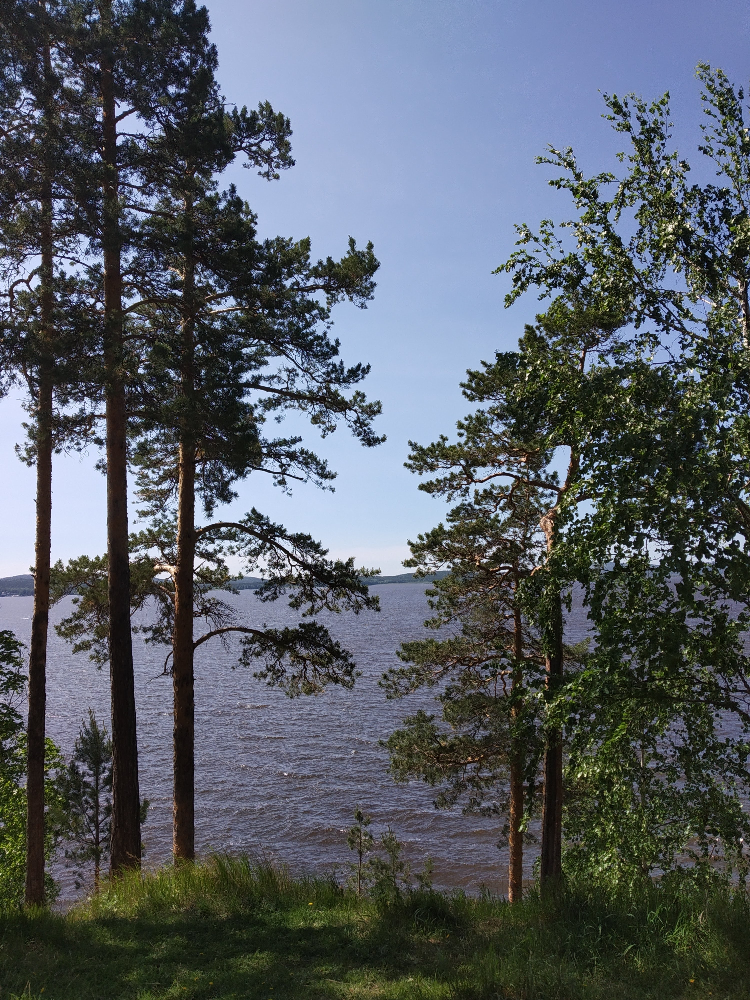
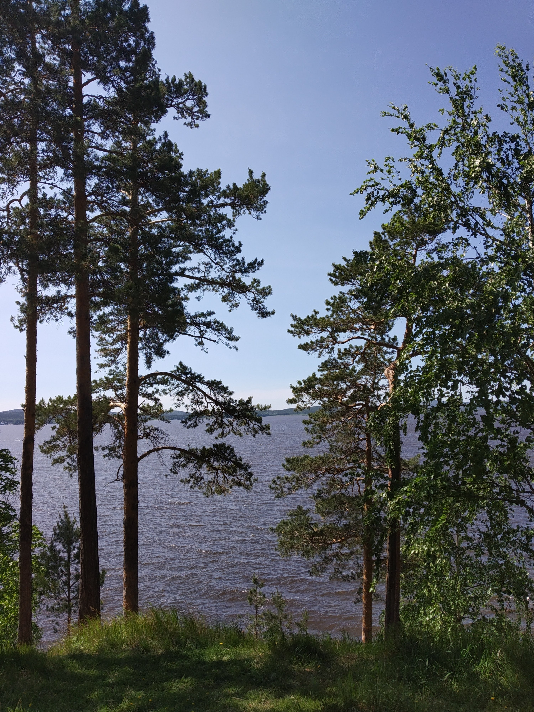
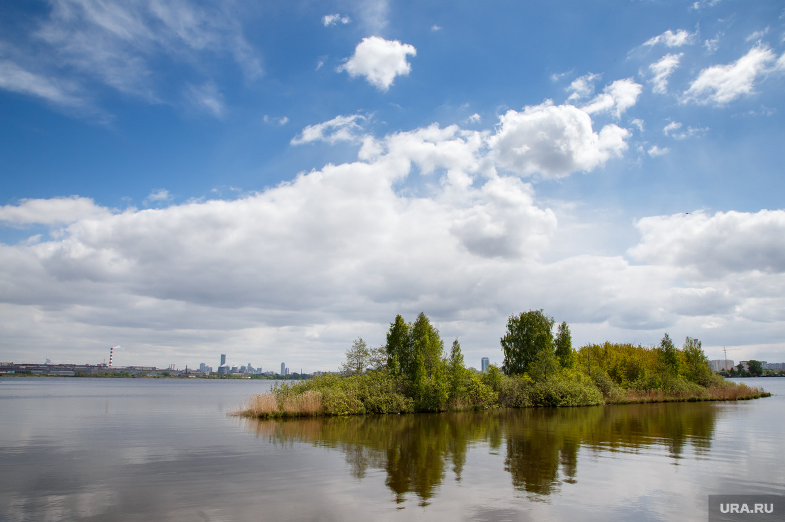
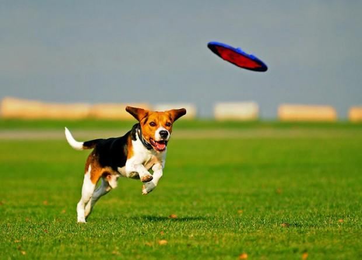
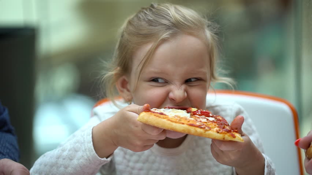
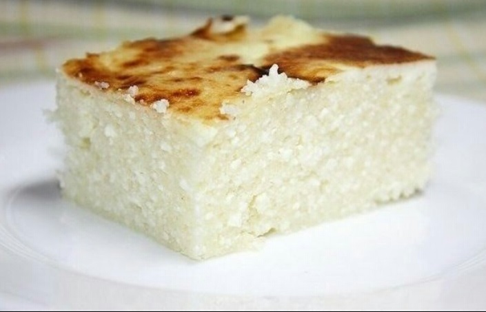
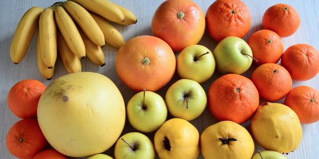
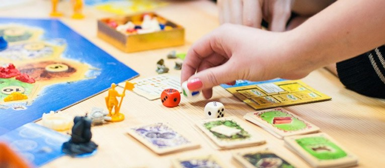

Ooh, great plan, Jerry. Great plan. © Rick Sanchez
Это план для тех, кто хочет много крутить педали, сделать фото на обрыве, увидеть
остров Любви и рискнуть поесть в неизведанных местах...
Начало
Все вместе берем 6 велосипедов в прокате и выдвигаемся в путь. Свежи, прекрасны и шутим
шуточки.

Наша цель – озеро Исетское, оно в Среднеуральске. Это значит, что нам надо преодолеть около 30
км и не сдохнуть. Кроме того, иногда
придется ехать по обочине дороге – не везде на нашем пути будут тротуары... Поэтому в прокате мы возьмем
еще и шлемы: будем ощущать себя настоящими
велопутешественниками + станем немного более укрепленными.
Ради чего всё это?
 

Конечно же, во имя любви...
Острова Любви, а также любви к приключениям и любви к фото на обрыве

Активности на природе
Тут всё просто: бадминтон, мяч, фрисби, фотографирование на фоне воды, обсуждение Среднеуральска и наших физических ощущений от 30 км на велосипеде

А как же еда?
Так как в нас силен дух авантюризма, то мы найдем, где поесть в Среднеуральске! Освоим местные летние веранды. Как вариант:
закажем доставку еды прямо к озеру – и сами поедим, и муравьев покормим.

После еды мы немного отдохнем как тюленчики и будем готовы к обратному пути!
Итого
Плюсы: возможность много крутить педали и увидеть классные места
Минусы: езда по дороге рядом с людьми в железных коробках
Всего мы преодолеем около 60 км (но неспеша и с перерывамми, посмотрим на природу, поедим и будем гордиться собой!
Задумайтесь над тревожным контрастом между сияющим умом здорового ребенка и слабоумием среднего уровня взрослого.
© Зигмунд Фрейд
© Зигмунд Фрейд
Соскучились по полднику и развивающим, но ни к чему не обязывающим занятиям? Наш городской детский лагерь для вас!
Зарядка 11:00-11:20
Начать день надо бодро! Поэтому мы сходу разомнём коленки и ладоши и заодно посчитаем до 50. Может даже на скорость.
Завтрак 11:30-12:00
У вас на завтрак большая кружка кофе или шампанское с брускеттой? Забудьте, мы начинаем день полезно: по настроению поварихи будет либо
творожная запеканка, либо каша (возможно, с комочками, как в лучших столовых страны).

Активный отдых 12:00-14:00
Время вспоминать дворовые игры: начнем с разминки во фрисби на пустыре, а потом – привет, "Выше ноги от земли",
"Казаки-разбойники", "Классики" и "Ножички"
Поздний полдник 14:15-14:30

Как не подкрепиться растущим организмам после игр? Но только полезно... Фруктовый перекус придет на помощь!
Интеллектуальный отдых 14:30-18:00
Это время азартно стучать по столу, орать друг на друга и иногда включать мозг на полную катушку: командное составление слов,
"Крокодил", "Есть контакт", Make'n'break, Bang (возможно), карточные игры (не на деньги, конечно же, не сегодня...) – а также всё, что принесёте вы.
Warning: никакой "Монополии".

Ужин 18:00
Что-что, а ужин по расписанию! И так как все-таки это не обычный день в лагере, а праздничный – будет пицца!
🤫 А еще будет вино.
Итого
Плюсы: всё будет хорошо в любую погоду, возможность поорать друг на друга и на мир
Минусы: никаких новых мест
Это будет день по расписанию, но без дедлайнов. Никаких испытаний себя на прочность – это однодневная путевка на ретрит в детство. Вместо посиделок у костра в конце смены – посиделки с вином.